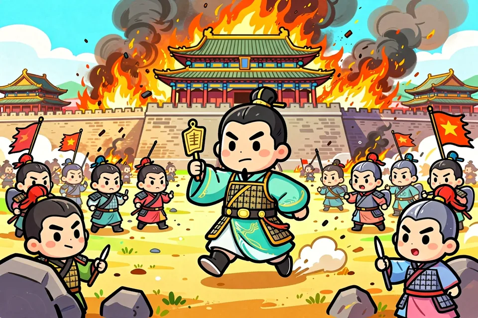

🗺️
疆域范围权威历史疆域地图（来源：维基共享资源）
🗺️ 地图来源：Wikimedia Commons（文件 Map of the Tang Empire and Central Asia Protectorates circa 660 CE.png ｜ 许可 CC0（公有领域））
极盛时疆域空前：西抵中亚、北包贝加尔湖、东北到朝鲜、南及越南，是当时世界上最强大的国家。
📜
历史进程从开创到落幕 · 漫画版
- 兴起
- 盛世
- 转折
- 中衰
- 灭亡
618兴起李渊建唐
🌱
登场 ▶主角登场👉 唐高祖李渊，带着俩儿子李世民、李建成闪亮出场！
🌱
开整 ▶隋炀帝把天下玩崩了，到处造反。李渊占着太原这块风水宝地悄悄攒实力。后来晋阳起兵、杀进长安，二儿子李世民更是开了挂一样，把薛举、刘武周、王世充、窦建德全收拾了！
🌱
收场 ▶624年基本统一，唐朝正式上线🎉 影响：隋末大乱局结束，中国最牛的王朝之一开场啦！
626兴起玄武门之变
🌱
登场 ▶对线双方👉 秦王李世民 vs 太子大哥李建成、弟弟李元吉。
🌱
开整 ▶李世民功劳太大，大哥觉得他抢风头，兄弟仨越闹越僵。李世民一不做二不休，在玄武门设伏，咻咻两箭把大哥二弟射了！还逼老爸李渊让他当太子。
🌱
收场 ▶李世民马上登基成唐太宗，开启『贞观之治』💡 影响：虽然夺位有点狠，但他后来成了千古明君，这段兄弟相残反而成了传奇。
627盛世贞观之治
👑
登场 ▶天团登场👉 唐太宗李世民 + 名臣房玄龄、杜如晦、魏徵、长孙无忌。
👑
开整 ▶太宗吸取隋朝翻车教训，说『水能载舟也能翻船』（老百姓才是大哥）。君臣一起搞事情：减税、修法、打工人福利拉满，还把西域稳住了。
👑
收场 ▶结果路不拾遗、家门都不用锁🔓 影响：『贞观』成了好皇帝的代名词，后面的朝代都抄它的作业。
690转折武周代唐
🔥
登场 ▶大女主登场👉 武则天（唐高宗的皇后、后来的太后）。
🔥
开整 ▶高宗身体不好，武则天慢慢掌权，最后直接自己当皇帝，改国号周！废了中宗、睿宗，690年登基迁都洛阳。
🔥
收场 ▶武周代唐15年，晚年把皇位还给李家💡 影响：中国唯一女皇帝诞生！打破『女人不能当政』的老规矩。
713盛世开元盛世
👑
登场 ▶男主回归👉 唐玄宗李隆基 + 贤相姚崇、宋璟。
👑
开整 ▶玄宗干掉太平公主夺权后超级努力，选贤任能、查户口、搞文教，丝路热闹得不行，胡人风气超流行。
👑
收场 ▶『开元全盛日，小县城都住着上万户』📈 影响：盛唐的顶峰！也是由盛转衰前最后的黄金时代。
755转折安史之乱
🔥
登场 ▶反派登场👉 安禄山 + 心腹史思明。安禄山一个人兼三个军区老大，河北兵权全在他手；史思明是他的好哥们，后来接力造反。
🔥
开整 ▶玄宗晚年光顾着玩，先宠李林甫、后宠杨国忠。李林甫不让边将当宰相、专让外族人带兵；杨国忠跟安禄山抢权，天天说『他要反』，结果真把安禄山逼反了！加上中央军越来越拉胯、地方军太强。755年安禄山在范阳起兵，一路狂飙拿下河北、洛阳。次年攻破潼关进长安，玄宗吓得跑去四川，马嵬坡兵变把杨贵妃赐死，太子李亨跑去灵武自己当皇帝（肃宗）。叛军自己还内讧：757年安禄山被亲儿子安庆绪杀了；史思明假投降又反，759年杀安庆绪自己上。
🔥
收场 ▶郭子仪、李光弼拼死打仗，借回纥兵收复两京；762年史思明儿子史朝义败亡，763年彻底平定，打了整整8年💥 影响：黄河中下游打成一片废墟，人口从约5300万暴降到不到1700万！中央彻底虚了：河北三镇自己当土皇帝、宦官掌兵能随便换皇帝。唐朝由盛转衰，再没缓过来。

763中衰藩镇割据
📉
登场 ▶双方👉 河北三镇节度使 vs 唐朝中央。
📉
开整 ▶平叛时为安抚投降的将领，干脆封他们当节度使，结果权力收不回来了。三镇自己任命官员、自己收税、爹传儿子，不爽就兵变赶走老大。
📉
收场 ▶中央的钱全靠江南，兵权被藩镇拿捏💡 影响：统一名存实亡，地方闹独立是唐朝灭亡的主因之一。
820中衰宦官专权
📉
登场 ▶反派👉 神策军宦官（俱文珍、仇士良这帮人）vs 皇帝和朝官。
📉
开整 ▶从肃宗、代宗起就让宦官带兵、监军，权力越来越大。宪宗、敬宗都被宦官杀了，立谁当皇帝全是宦说的算；『甘露之变』朝官想翻盘惨败。
📉
收场 ▶皇帝变成宦官的提线木偶🎭 影响：里面宦官失控、外面藩镇独立，唐朝彻底没救了。
881中衰黄巢起义
📉
登场 ▶草根逆袭👉 盐贩子黄巢 vs 唐僖宗朝廷。
📉
开整 ▶晚唐税收重、灾荒多、考试还不公平，老百姓实在活不下去。王仙芝先反，黄巢跟上，转战12个省、专挑软柿子捏，880年打进长安自己当皇帝建大齐。
📉
收场 ▶唐朝借沙陀人李克用的兵才镇压，884年黄巢战败死💡 影响：中央威信碎一地，朱温等藩镇趁乱崛起。
907灭亡朱温篡唐
💀
登场 ▶终极大反派👉 朱温（宣武节度使，后梁太祖）vs 唐哀帝。
💀
开整 ▶黄巢之乱后朱温占着汴梁，挟天子令诸侯。903年把宦官全杀光，904年迁都洛阳杀了唐昭宗，907年逼哀帝让位。
💀
收场 ▶唐朝灭亡，后梁上线，五代开始💀 影响：三百年的大唐落幕，天下又分裂，直到北宋才重新统一。
✨
朝代特点它最特别的地方
- 🌟中国古代最开放、最自信、最繁荣的朝代，长安是世界中心。
- 🌟诗歌黄金时代：李白、杜甫、白居易，群星璀璨。
- 🌟万国来朝、胡风盛行，包容是它最强的软实力。
- 🌟由盛转衰的镜鉴：安史之乱暴露“盛世的裂缝”（藩镇、宦官、党争）。
- 🌟制度成熟：三省六部、科举诗赋取士，影响东亚千年。
👥
重要人物点一点，跳进去看大人物自己的故事
唐太宗李世民
贞观明君
玄武门之变夺位，却以“兼听则明”任贤纳谏，开创贞观之治；证明“得位不正”也能成“千古一帝”。
📖 看他的故事 →
武则天
唯一女皇
从才人到女帝，打破“男尊女卑”天花板；承上启下，把唐朝推向开元盛世。
📖 看他的故事 →
唐玄宗李隆基
由盛转衰
前期开元盛世达顶峰，后期宠信奸佞、沉迷享乐，酿成安史之乱——一人之身，盛衰俱备。
📖 看他的故事 →
李白 · 杜甫
诗仙 · 诗圣
李白浪漫飘逸写盛唐气象，杜甫沉郁顿挫录乱世血泪；“李杜”双峰，照亮整个中国诗史。
📖 看他的故事 →
唐哀帝
亡国之君
唐朝末代皇帝，13岁即位已是朱温手中傀儡，907年被废杀，唐亡——藩镇、宦官、党争三大顽疾终将王朝掏空。
📖 看他的故事 →
魏徵
唐初谏臣
原太子建成旧部，太宗重用为镜；一生进谏两百余次，『以人为镜可以明得失』说的就是他。
📖 看他的故事 →
房玄龄
唐初名相
玄武门核心谋主、贞观制度总设计师；与杜如晦『房谋杜断』，盛唐背后的总管家。
📖 看他的故事 →
⚖️
制度 · 文化 · 经济国家怎么管，人们怎么过
⚖️ 政治制度
完善三省六部、科举（诗赋取士）；前期任贤纳谏；后期藩镇、宦官、党争三大顽疾。
🎭 社会文化
诗歌巅峰（李杜白）；书法（颜柳）、绘画（吴道子）；佛教（玄奘取经）、茶文化；胡风盛行、包容开放。
💰 经济发展
均田租庸调；曲辕犁、筒车提高农业；丝瓷闻名世界；长安、扬州、广州为国际商港；海陆丝路并举。
⚔️
著名战役动动手指，看大军对决
⚔️ 怛罗斯之战
唐军（高仙芝） VS 大食（阿拉伯）
点击「开战！」看看这场大战是怎么打的～
📝
小测验考考你记住了没
得分：0 / 6
❓ 中国唯一女皇帝是？
💡 武则天是中国唯一的女皇帝。
❓ “诗仙”是？
💡 李白被称“诗仙”。
❓ 唐朝由盛转衰的转折是？
💡 安史之乱使唐朝由盛转衰。
❓ 唐朝的都城、当时的世界中心是？
💡 唐都长安是当时世界的中心。
❓ 唐朝由盛转衰，暴露“盛世裂缝”的是？
💡 安史之乱使唐朝由盛转衰，藩镇宦官党争自此失控。
❓ 唐朝最后一位皇帝、亡国的是？
💡 唐哀帝被朱温废杀，唐朝灭亡。